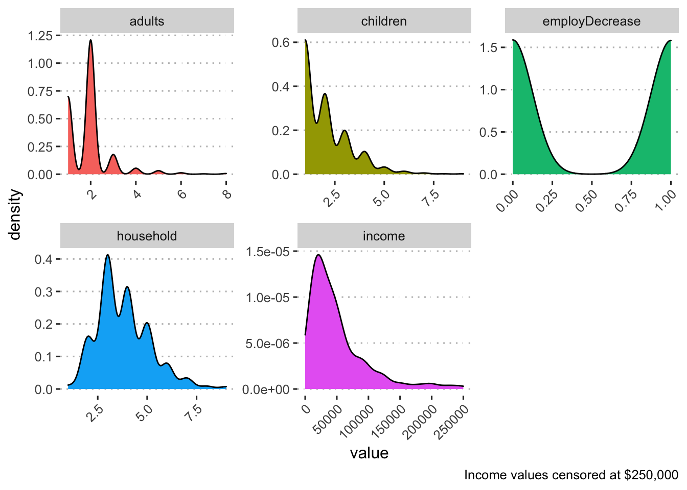
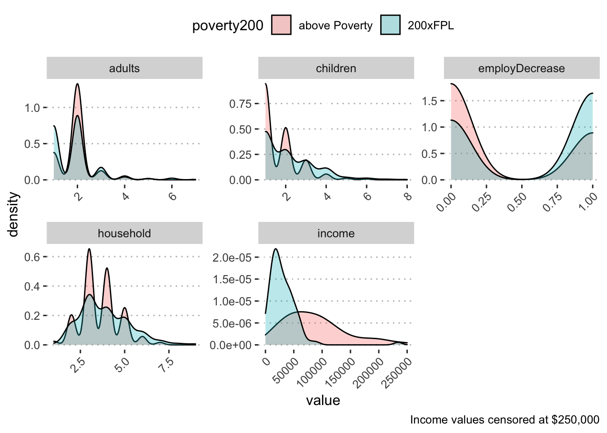

Demographics by income for Black respondents:
| variable | n | mean | sd | range |
|---|---|---|---|---|
| adults | 684 | 1.90 | 0.93 | 1.00 - 8.00 |
| children | 691 | 2.00 | 1.24 | 1.00 - 9.00 |
| employDecrease | 584 | 0.50 | 0.50 | 0.00 - 1.00 |
| household | 684 | 3.81 | 1.36 | 1.00 - 9.00 |
| income | 188 | 57,569.45 | 103,272.05 | 0.00 - 1,300,000.00 |

| variable | n | mean | sd | range |
|---|---|---|---|---|
| above Poverty | ||||
| adults | 219 | 1.96 | 0.69 | 1.00 - 5.00 |
| children | 220 | 1.67 | 0.92 | 1.00 - 6.00 |
| employDecrease | 202 | 0.33 | 0.47 | 0.00 - 1.00 |
| household | 219 | 3.58 | 1.07 | 1.00 - 7.00 |
| income | 73 | 101,177.52 | 152,953.39 | 5,900.00 - 1,300,000.00 |
| 200xFPL | ||||
| adults | 352 | 1.83 | 0.94 | 1.00 - 7.00 |
| children | 356 | 2.12 | 1.29 | 1.00 - 8.00 |
| employDecrease | 288 | 0.60 | 0.49 | 0.00 - 1.00 |
| household | 352 | 3.87 | 1.41 | 1.00 - 9.00 |
| income | 115 | 29,887.80 | 26,984.80 | 0.00 - 234,000.00 |
